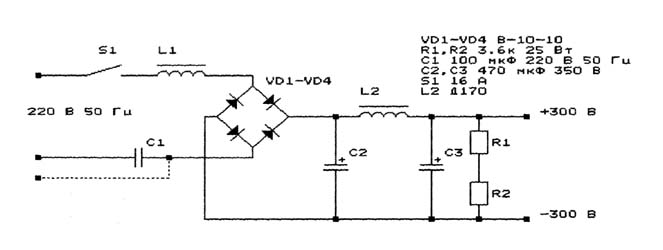
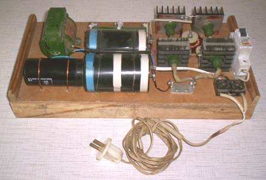

Макет источника питания постоянного напряжения +300 В с выходным током до 16 А
При разработке и налаживании ключевых каскадов импульсных преобразователей напряжения необходим выпрямитель сетевого напряжения 220 В с фильтром. Подобный выпрямитель был собран в виде отдельного макета. Его отличительным свойством является простота конструкции и применения. Помимо вышесказанного, он может использоваться и для других целей: питание малогабаритных электромагнитов [1, 2], намагничивающих устройств, проведение опытов по электролизу и т. д.
Технические данные:
Конструкция:
Схема источника питания приведена на рис. 1.

Рис. 1. Схема электрическая принципиальная источника питания +300 В 16 А.
Входное переменное напряжение 220 В (частота 50 Гц) через токоограничивающий конденсатор C1 (или напрямую), автоматический выключатель S1 (16 А) и дроссель L1 подается на мостовой выпрямитель VD1 - VD4 (4 шт. В-10-10). Пульсации выходного напряжения выпрямителя сглаживаются П-образным фильтром C2L2C3. К выходу фильтра может быть подключена внешняя нагрузка. Дроссель L1 предназначен для ограничения скорости нарастания тока через диоды моста при включении сетевого напряжения, когда начинают заряжаться конденсаторы фильтра. Резисторы R1R2 служат в качестве начальной нагрузки, а также для быстрой разрядки конденсаторов фильтра после выключения сетевого напряжения. Для понижения выходного напряжения источника питания на его входе может использоваться понижающий трансформатор (автотрансформатор).
Все детали источника питания смонтированы на шасси из изоляционного материала (дерево с пропиткой). Внешний вид показан на рис. 2.

Рис. 2. Внешний вид источника питания.
Подключение нагрузки к источнику питания осуществляется методом пайки. При работе с устройством необходимо соблюдать правила техники безопасности, так как его детали находятся под высоким напряжением и не имеют гальванической развязки с сетью переменного тока 220 В. Кроме того, в фильтре источника питания используются конденсаторы достаточно большой емкости, поэтому при коротком замыкании в цепи нагрузки могут возникать большие импульсные токи.
Состояние разработки:
Устройство используется в лабораторных условиях при разработке и налаживании источников вторичного электропитания и других подобных преобразователей, для оперативного намагничивания магнитов из различных марок феррита с помощью малогабаритного электромагнита [1], для проведения экспериментов по электролизу.
Ссылки:
20.07.2006
19.06.2010
29.08.2012
Альтернативные источники
энергии
Компьютеры и
Интернет
Магнитные поля
Механотронные системы
Перспективные
разработки
Электроника и технология